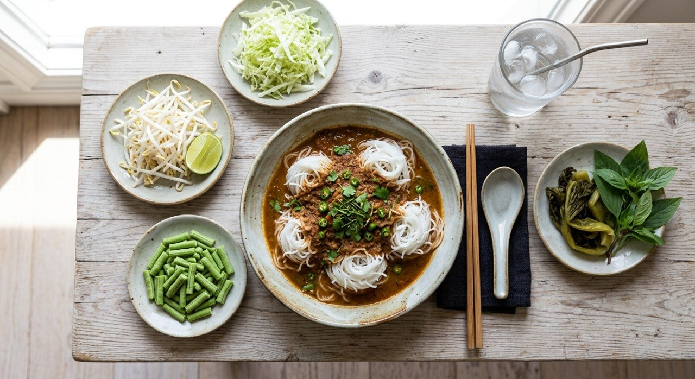

Rice vermicelli under a pounded fish curry — the central Thai coconut school, or the wild jungle school with no coconut at all.

ขนมจีนน้ำยา is the dish where everything is made twice — once by boiling, once by pounding. The fish is cooked, picked off the bone, and pounded together with a curry paste of dried chillies, galangal, lemongrass, fingerroot, shallots and garlic; then the lot goes back into the pot to become the sauce. Ajinomoto's recipe says it outright: the fish sauce (น้ำยาปลาช่อน) is the heart of the dish.
The Thai sources split the dish into two schools, and both are canonical. น้ำยากะทิ — the coconut version of the central plains — simmers the pounded fish in coconut cream and milk into a soft, rich curry. น้ำยาป่า — the jungle version — uses water and fermented fish sauce (ปลาร้า), no coconut, brighter and wilder. Kapook's jungle recipe is the blunt version: mackerel, aromatics, fish balls, and the author's own confession — she skips the pla ra because she doesn't like the smell, and the recipe still works.
Then come the garnishes, which is half the meal. Every source serves it over cold rice vermicelli (ขนมจีน) with raw vegetables — bean sprouts, cabbage, long beans — and Wongnai's recipe leaves the coconut itself "ตามชอบ" (to taste), quietly admitting the two schools blur at the family table.
| Thai | English | Amount |
|---|---|---|
| Curry paste (โขลกรวมกัน) | ||
| พริกขี้หนูแห้ง / พริกชี้ฟ้าแห้ง | Dried bird's eye / dried spur chillies | 2 / 5 |
| ข่า / ตะไคร้ / ผิวมะกรูด | Galangal / lemongrass / kaffir zest | 1 tsp / 1 tbsp / ½ tsp |
| รากผักชี / กระเทียม / หอมแดง | Coriander root / garlic / shallots | 1 / 3 tbsp / 2 tbsp |
| พริกไทยเม็ด / กระชาย / กะปิ | Peppercorns / fingerroot / shrimp paste | ½ tsp / 70 g / 1 tsp |
| น้ำยา (the sauce) | ||
| เนื้อปลาช่อนต้มสุก | Cooked snakehead fish | 100 g |
| หัวกะทิ / หางกะทิ | Coconut cream / coconut milk | 1 cup / 2 cups |
| น้ำปลา / น้ำตาลปี๊บ | Fish sauce / palm sugar | 2½ tbsp / 2 tsp |
| To serve | ||
| ขนมจีน | Rice vermicelli | 600 g |
| ถั่วงอก / กะหล่ำปลี / ถั่วฝักยาว | Bean sprouts / cabbage / long beans | 100 g / 125 g / 50 g |
The jungle school (Pim's Kitchen, measured): 23 g large + 10 g small dried chillies, 70 g shallots, 50 g garlic, 50 g lemongrass, 10 g galangal, 1 tbsp shrimp paste, 300 g fingerroot, 700 g white fish, 600 g chicken feet for the stock, ⅓ cup fish sauce, ⅔ cup pla ra, 250 g fish balls. No coconut.
Coconut or not. The defining split: Ajinomoto simmers in 3 cups of coconut cream and milk; Kapook's jungle school and Pim's jungle recipe use none — water and pla ra instead. Both are nam ya; they just come from different tables.
Pla ra. Kapook and Pim season with fermented fish sauce (optional in Kapook's; the author skips it). Ajinomoto and Wongnai leave it out entirely. It's the taste of the jungle school and the line many home cooks won't cross.
Which fish. Snakehead (Ajinomoto, Wongnai — the classic), mackerel (Kapook), or any white fish — Pim names snakehead, tilapia or ปลาน้ำดอกไม้ and calls them interchangeable. The paste, not the species, carries the dish.
Chicken feet. Pim's stock uses 600 g of chicken feet for body — a trick none of the others use. The collagen thickens the sauce without coconut, which is exactly the jungle school's problem solved.
Pound first or boil first. Wongnai boils the fish AND all the aromatics together, then pounds everything at once — the simplest route. Ajinomoto and Pim pound the raw aromatics into a paste first, then cook. Same end, different order.
This recipe is translated from the following Thai-language sources. Where they disagree, we've said so.
1. Ajinomoto (Thailand) — "ขนมจีนน้ำยาปลาช่อน" (the coconut-school recipe used here) — recipe.ajinomoto.co.th
2. Kapook — "ขนมจีนน้ำยาป่า อร่อยแซ่บคำแรกยันเส้นสุดท้าย" (the jungle school) — cooking.kapook.com
3. Pim's Kitchen (พิม) — "ขนมจีนน้ำยากะทิ น้ำยาป่า" (both schools, measured, chicken-foot stock) — pim.in.th
4. Wongnai — "ขนมจีนน้ำยาปลาช่อน" (boil-everything-then-pound school) — wongnai.com